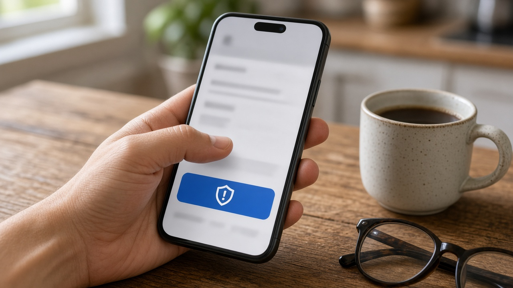

문자 스팸은 줄었는데 스팸 전화 신고는 28퍼센트 늘었어요, 올해 상반기 스팸 유통현황과 신고 방법
요즘 모르는 번호로 걸려 오는 광고 전화나 수상한 문자 때문에 휴대전화를 볼 때마다 피곤하신 분들 많으시죠.
그래도 숫자로 보면 스팸이 조금 줄었다는 발표가 나왔어요.
방송미디어통신위원회와 한국인터넷진흥원이 11월 16일 2026년 상반기 스팸 유통현황을 발표했거든요.
다만 모든 스팸이 줄어든 건 아니라서, 무엇이 줄고 무엇이 늘었는지와 받았을 때 어떻게 신고하면 되는지 차례로 정리해 볼게요.
한 달 평균 8.52통, 반년 만에 1.83통 줄었어요
이번 조사는 지난 5월 전국 만 12세부터 69세까지 휴대전화와 이메일을 쓰는 3천 명이 받은 스팸을 살펴본 결과예요.
여기에 이용자가 한국인터넷진흥원에 신고하거나 진흥원이 스스로 찾아낸 건수를 함께 묶었어요.
이용자 한 사람이 한 달 동안 받은 스팸은 평균 8.52통으로, 지난해 하반기 10.35통보다 1.83통 줄었어요. 비율로는 17.7퍼센트 감소예요.
종류별로 보면 휴대전화 문자 스팸이 2.13통, 음성 스팸이 3.65통, 이메일 스팸이 2.74통이었고, 세 가지 모두 직전 반기보다 0.61통씩 줄었어요.
눈여겨볼 점은 한 달에 받는 스팸 가운데 전화로 오는 음성 스팸이 가장 많다는 거예요.

문자 신고는 절반 가까이 줄고 전화와 이메일 신고는 늘었어요
상반기에 신고되거나 탐지된 스팸은 모두 2,146만 건으로, 직전 반기 2,367만 건보다 221만 건 줄었어요.
그런데 속을 들여다보면 흐름이 갈려요.
문자 스팸은 1,288만 건에서 697만 건으로 591만 건이나 줄었어요.
반대로 음성 스팸은 873만 건에서 1,118만 건으로 245만 건 늘었고, 이메일 스팸도 206만 건에서 331만 건으로 125만 건 늘었어요.
문자로 오는 스팸은 막히는 대신, 전화와 이메일 쪽으로 옮겨 가는 모습이라고 볼 수 있어요.
왜 줄었고 앞으로 무엇이 달라지나
정부는 스팸 수신량이 줄어든 이유로 전송자격인증제 같은 규제 강화와 통신사, 휴대전화 제조사의 대응을 꼽았어요.
전송자격인증제는 대량으로 문자를 보내는 사업자가 자격을 인증받아야 문자를 보낼 수 있게 한 제도예요.
늘어난 음성 스팸에 대해서는 이동통신사와 함께 전화 앱의 스팸 신고 기능을 한국인터넷진흥원 신고 체계와 연결하고, 모인 자료를 분석해 차단을 강화할 계획이라고 밝혔어요.
전화 앱에서 스팸으로 신고한 번호가 정부 신고 체계로 바로 모이면, 같은 번호가 여러 사람에게 계속 전화를 거는 일을 더 빨리 막을 수 있게 되는 거예요.
방송미디어통신위원장도 음성 스팸 신고와 탐지가 늘어난 만큼 대량문자 관리와 불법스팸 제재를 계속 강화하겠다고 말했어요.
스팸 문자와 전화를 받았을 때 신고하는 방법
가장 쉬운 방법은 휴대전화 문자 화면에 있는 스팸으로 신고 기능을 누르는 거예요.
보이스피싱이나 스미싱이 의심되면 전기통신금융사기 통합신고대응센터 누리집 counterscam112.go.kr 에서 스미싱 문자 신고를 하거나 국번 없이 1394로 상담할 수 있어요.
문자 속 주소가 위험한지 궁금하다면 카카오톡의 보호나라 채널에 있는 스미싱 피싱 확인 서비스로 신고하고 악성 여부를 확인해 볼 수 있어요.
한국인터넷진흥원 인터넷침해대응센터는 국번 없이 118이에요.
출처가 불분명한 주소는 누르지 말고 바로 지우는 게 기본이고, 정부기관이나 금융회사는 전화나 문자로 원격제어 앱 설치를 요구하지 않는다는 점도 기억해 두세요.
이미 주소를 눌렀거나 앱을 깔았다면 이렇게 하세요
문자 속 주소를 누른 것만으로는 악성 앱에 감염되지 않지만, 그 주소로 앱을 설치했다면 바로 점검이 필요해요.
모바일 백신으로 검사해 악성 앱이 발견되면 비행기 모드로 바꾼 뒤, 다른 사람의 전화기로 112에 신고하는 게 안전해요. 악성 앱이 휴대전화를 원격으로 조종할 수 있기 때문이에요.
내 번호가 다른 사람에게 스미싱을 보내는 데 쓰일 수도 있으니, 통신사 부가서비스에서 무료로 신청할 수 있는 번호도용문자차단서비스를 켜 두면 좋아요.
소액결제 피해가 걱정되면 통신사 고객센터에서 결제 내역을 먼저 확인하고, 피해가 있으면 문자를 캡처해 두고 통신사와 경찰에 차례로 신고하면 돼요.
악성 앱이 깔린 휴대전화로 금융 거래를 했다면 인증서와 보안카드 같은 금융 정보를 폐기하고 다시 발급받는 것도 잊지 마세요.
참고 자료 방송미디어통신위원회 한국인터넷진흥원 2026년 상반기 스팸 유통현황 발표 2026년 11월 16일, 한국인터넷진흥원 보호나라 보안공지 사칭 피싱 주의 권고 2026년 10월 6일
태그 스팸문자 스팸전화 음성스팸 스팸신고 스미싱 보이스피싱 한국인터넷진흥원 번호도용문자차단 불법스팸대응센터 스팸유통현황